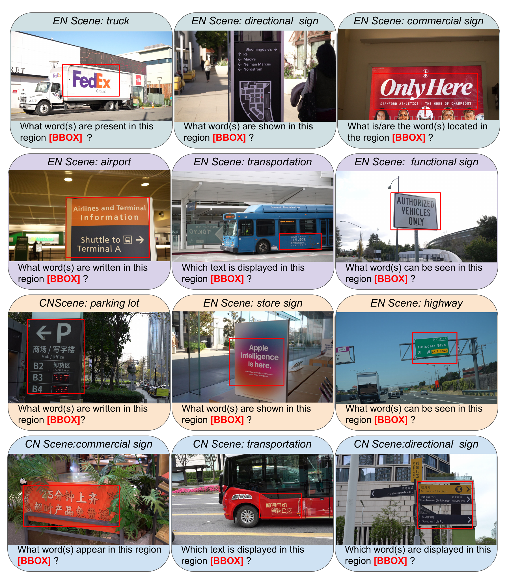
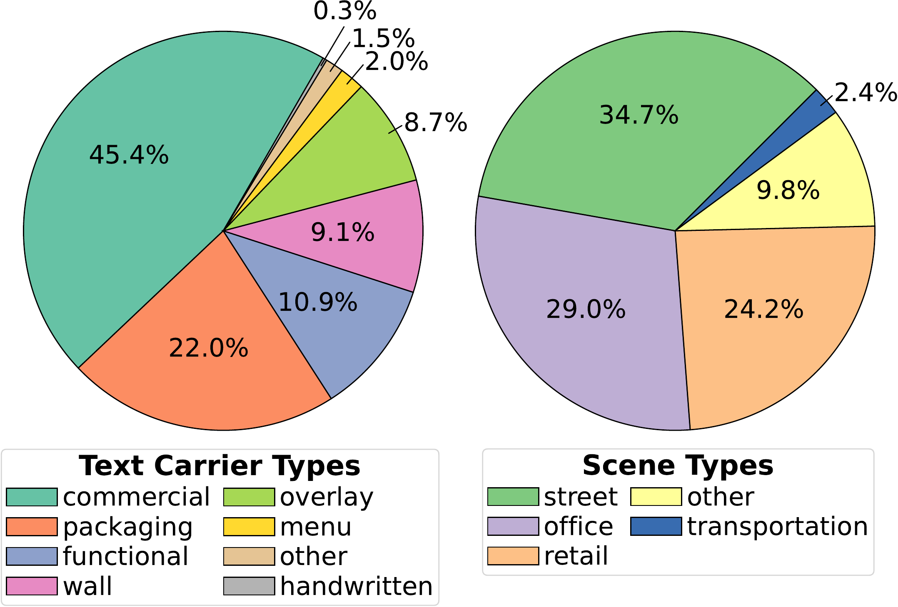
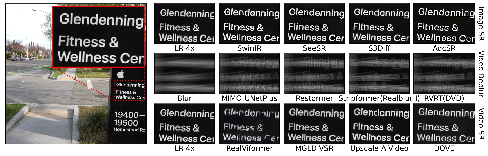
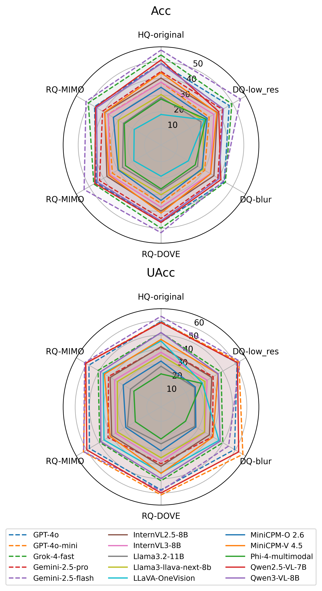

Multimodal Large Language Models (MLLMs) have recently demonstrated strong progress in visual–linguistic understanding, yet their performance on text-centric video reasoning remains highly sensitive to input quality. Real-world user-provided videos frequently contain motion blur, compression artifacts, noise, and low-resolution text, substantially impairing reliable text reading and downstream reasoning. Whether MLLMs can robustly read and reason over in-the-wild text under diverse quality conditions remains an unanswered fundamental question.
To bridge this gap, we present ClearText-Video (CTVid), a large-scale benchmark designed to evaluate text-centric video understanding under controlled quality variation. CTVid comprises more than 4.6K real-world text-rich egocentric videos, 550K+ frames, and 1.6M scene-text annotations, enabling comprehensive evaluation across three regimes: High-Quality, Degraded-Quality, and Restored-Quality. We comprehensively evaluate 18 representative restoration methods and 16 state-of-the-art MLLMs on our test set.
Multi-stage hybrid pipeline combining automated detection with human verification.
Public data is released in one Hugging Face repository with separate spatial, temporal, and training folders. Testing QA uses QA-v2 annotations; refined training QA is maintained internally until the next public upload.


Text recognition within bounding boxes. Three question types: fill-in-blank, multiple-choice, true/false.
Text motion, visibility, and dynamics across 120-frame clips. Five categories: presence, localization, motion, size, boundary.
Evaluate restoration methods on scene-text detection quality (precision, recall, F1).
Character-level recognition accuracy after restoration. Measures end-to-end text fidelity.
Side-by-side comparison of restoration methods on degraded text-rich frames.

Accuracy and uncertainty profiles across 16 evaluated MLLMs.

Results on the HQ test set. Submit your model: open a GitHub Issue.
| Rank | Model | Type | Spatial Acc (HQ) | Temporal Acc (HQ) | Spatial Acc (DQ-blur) |
|---|---|---|---|---|---|
| 🥇 | Gemini-2.5-flash | Closed | 57.14% | 40.12% | 49.31% |
| 🥈 | Gemini-2.5-pro | Closed | 55.83% | 42.19% | 47.82% |
| 3 | Qwen2.5-VL-7B | Open | 51.21% | 35.67% | 44.17% |
| 4 | Kimi-VL-16B | Open | 49.38% | 38.31% | 42.95% |
| — | blur (DQ baseline) | — | — | — | — |
Full results in Table 2 of the paper. Numbers are approximate; see paper for full details.
The public dataset is hosted on Hugging Face with separate spatial, temporal, and training folders.
# Clone the repository (includes all annotation JSONs) git clone https://github.com/jinlong17/CTVid-Bench.git cd CTVid-Bench # Download images and videos from HuggingFace python tools/download_data.py --variants GT blur downsample_x4
@inproceedings{ctvid2026,
title = {ClearText-Video: A Large-Scale Text-Centric Video Dataset
Bridging Video Restoration and Scene-Text Enhancement},
booktitle = {CVPR},
year = {2026},
}